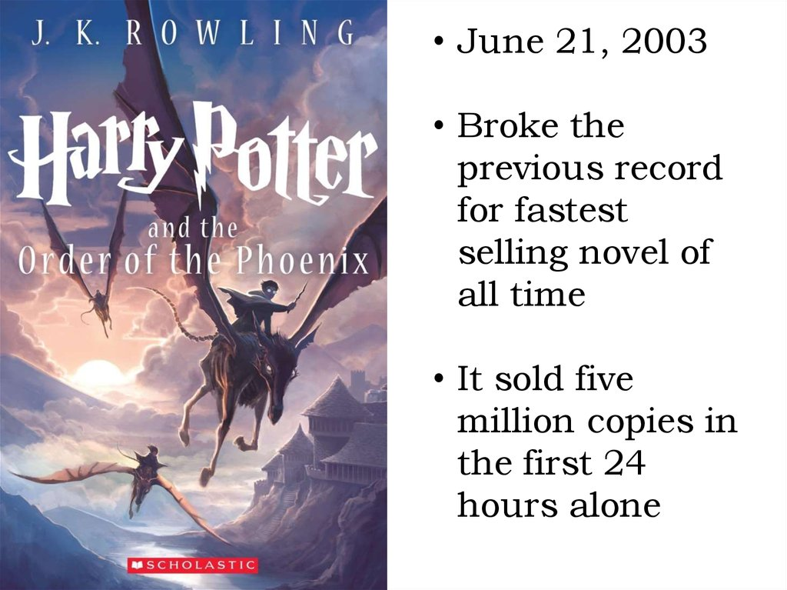

| Home | Articles | Habits | Books |
 |
Don Quixote[a][b][d] is a Spanish epic novel by Miguel de Cervantes. It was originally published in two parts, in 1605 and 1615. Considered a founding work of Western literature, it is often labelled as the first modern novel[2][3] and one of the greatest works ever written.[4][5] Don Quixote is also one of the most-translated books in the world[6] and one of the best-selling novels of all time. The plot revolves around the adventures of a member of the lowest nobility, a hidalgo[e] from La Mancha named Alonso Q |
 |
who reads so many chivalric romances that he loses his mind and decides to become a knight-errant (caballero andante) to revive chivalry and serve his nation, under the name Don Quixote de la Mancha.[b] He recruits as his squire a simple farm labourer, Sancho Panza, who brings a unique, earthy wit to Don Quixote's lofty rhetoric. In the first part of the book, Don Quixote does not see the |
 |
The Little Prince (French: Le Petit Prince, pronounced [lə p(ə)ti pʁɛ̃s]) is a novella written and illustrated by French aristocrat, writer, and military pilot Antoine de Saint-Exupéry. It was first published in English and French in the United States by Reynal & Hitchcock in April 1943 and was published posthumously in France following liberation; Saint-Exupéry's works had been banned by the Vichy Regime. The story follows a young prince who visits various planets, including Earth, and addresses themes of loneliness, friendship, love, and loss. Despite its style as a children's book, The Little Prince makes observations about life, adults, and |
 |
The Little Prince (French: Le Petit Prince, pronounced [lə p(ə)ti pʁɛ̃s]) is a novella written and illustrated by French aristocrat, writer, and military pilot Antoine de Saint-Exupéry. It was first published in English and French in the United States by Reynal & Hitchcock in April 1943 and was published posthumously in France following liberation; Saint-Exupéry's works had been banned by the Vichy Regime. The story follows a young prince who visits various planets, including Earth, and addresses themes of loneliness, friendship, love, and loss. Despite its style as a children's book, The Little Prince makes observations about life, adults, and |
|  | Harry Potter is a series of seven fantasy novels written by British author J. K. Rowling. The novels chronicle the lives of a young wizard, Harry Potter, and his friends Hermione Granger and Ron Weasley, all of whom are students at Hogwarts School of Witchcraft and Wizardry. The main story arc concerns Harry's conflict with Lord Voldemort, a dark wizard who intends to become immortal, overthrow the wizard governing body known as the Ministry of Magic and subjugate all wizards and Muggles (non-magical people). |